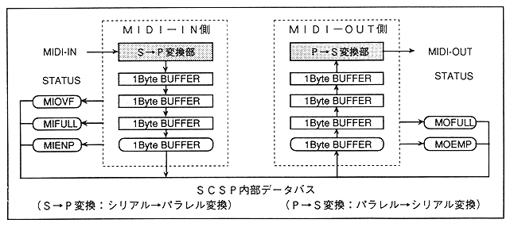

Return to previous page ｜ Return to menu ｜ Go to next page
- Figure 4.59 MIDI-I / F block diagram

- MIBUF [7: 0] (R); Midi Input BUFfer
- MIDI input data buffer.
When receiving on the MIDI-IN side, the data transferred from the outside is automatically taken into the MIDI-IN buffer “MIBUF”.
- MIOVF (R); Midi Input OVer-Flow
- “MIOVF” becomes “1B” when data is transferred to MIDI-IN with all the data stored in the MIDI-IN buffer, indicating an overflow. Overflow results in a MIDI communication error because MIDI communication is not performed normally.
- MIFULL (R); Midi Input FULL
- When all 4 bytes of the MIDI-IN buffer are loaded, “MIFULL” is set to “1B”, indicating that there is no free space in the buffer.
- MIEMP (R); Midi Input EMPty
- “1B” is set when the input FIFO is empty. When there is no data in the MIDI-IN buffer, such as when all data in the MIDI-IN buffer has been read by the CPU, etc., "MIEMP" becomes "1B", indicating that the buffer is empty.
Figure 4.60 shows a diagram of MIDI-IN and interrupt generation part. An interrupt occurs when "MIEMP" is "1B" and external data is received and "MIEMP" becomes "0B". All data in the MIDI-IN buffer is read and "MIEMP" When “becomes“ 1B ”, the interrupt is released.
Return to previous page ｜ Return to menu ｜ Go to next page